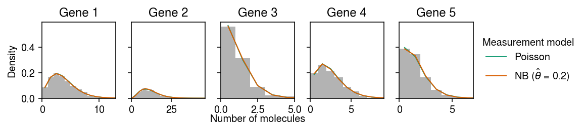
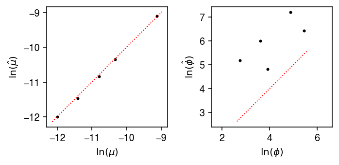

Negative binomial measurement model
Table of Contents
Introduction
We, and Svensson 2020, found some evidence for overdispersion in control scRNA-seq data. Here, we estimate to what extent that overdispersion could be explained by an overdispersed measurement model, using the key fact that the measurement overdispersion is described by a single parameter common across all genes. We specifically consider combining an NB measurement model with a Gamma expression model \( \DeclareMathOperator\Pois{Poisson} \DeclareMathOperator\Gam{Gamma} \DeclareMathOperator\NB{NB} \DeclareMathOperator\V{V} \newcommand\const{\mathrm{const}} \newcommand\lnb{l_{\mathrm{NB}}} \newcommand\E[1]{\left\langle #1 \right\rangle} \)
\begin{align} x_{ij} \mid s_i, \lambda_{ij}, u_{ij} &\sim \NB(s_i \lambda_{ij}, \theta)\\ \lambda_{ij} \mid a_j, b_j &\sim \Gam(a_j, b_j), \end{align}where the NB distribution is parameterized by mean and dispersion, and the Gamma distribution is parameterized by shape and rate.
Setup
import numpy as np import pandas as pd import pickle import scanpy as sc import scipy.special as sp import scipy.stats as st import scmodes
%matplotlib inline %config InlineBackend.figure_formats = set(['retina'])
import colorcet import matplotlib import matplotlib.pyplot as plt plt.rcParams['figure.facecolor'] = 'w' plt.rcParams['font.family'] = 'Nimbus Sans'
Results
Simulate from the NB measurement model
Simulate data from the model.
def simulate_nb_gamma(n, p, theta, seed=0): np.random.seed(seed) log_mean = np.random.uniform(low=-12, high=-8, size=(1, p)) log_disp = np.random.uniform(low=-6, high=0, size=(1, p)) s = 1e5 * np.ones((n, 1)) lam = st.gamma(a=np.exp(-log_disp), scale=np.exp(log_mean + log_disp)).rvs(size=(n, p)) u = st.gamma(a=1 / theta, scale=theta).rvs(size=(n, p)) x = st.poisson(s * lam * u).rvs() return x, s, lam, u, log_mean, -log_disp, theta
Total variance under NB measurement
Consider gene \(j\), and assume \(a = \phi^{-1}\), \(b = \mu^{-1}\phi^{-1}\). Then,
\begin{align} \E{\lambda_i} &= \mu\\ \V[\lambda_i] &= \mu^2\phi\\ \V[x_i] &= \E{\V[x_i \mid \lambda_i]} + \V[\E{x_i \mid \lambda_i}]\\ &= \E{s_i \lambda_i + (s_i \lambda_i)^2 \theta} + \V[s_i \lambda_i]\\ &= s_i \mu + s_i^2 \mu^2 (\phi + \theta + \phi\theta) \end{align}This result suggests a heuristic approach to characterize the profile likelihood of the data with respect to \(\theta\). The key question is: what does the profile likelihood look like for data consistent with \(\theta=0\)?
import scipy.optimize as so def _loss(par, x, s, theta0): mu, phi = np.exp(par) theta = phi + theta0 + phi * theta0 return -st.nbinom(n=1 / theta, p=1 / (1 + s * np.exp(log_mu) / theta)).logpmf(x).mean() np.random.seed(1) log_mu = -10 s = 1e5 n = 100 theta0 = 0.2 fits = dict() grid = np.logspace(-3, 1, 100) for log_phi in (-4, -2, 0): lam = st.gamma(a=np.exp(-log_phi), scale=np.exp(log_mu + log_phi)).rvs(n) u = st.gamma(a=1 / theta0, scale=theta0).rvs(n) x = st.poisson(s * lam * u).rvs(n) fits[log_phi] = [so.minimize(_loss, x0=[log_mu, log_phi], args=(x, s, theta), method='Nelder-Mead') for theta in grid]
cm = plt.get_cmap('Dark2') plt.clf() plt.gcf().set_size_inches(2.5, 2.5) plt.xscale('log') for i, k in enumerate(fits): temp = n * np.array([-f.fun for f in fits[k]]) plt.plot(grid, temp - temp.max(), lw=1, c=cm(i), label=rf'$\phi$ = {np.exp(k):.2g}') plt.axvline(x=theta0, c='k', lw=1, ls=':') plt.legend() plt.xlabel(r'Measurement dispersion $\theta$') plt.ylabel('Diff log lik from best') plt.tight_layout()

VBEM algorithm for Gamma expression model
To estimate \(a_1, \ldots, a_p, b_1, \ldots, b_p, \theta\) from observed data, we use a VBEM algorithm. First, introduce latent variables \(u_{ij}\)
\begin{align} x_{ij} \mid s_i, \lambda_{ij}, u_{ij} &\sim \Pois(s_i \lambda_{ij} u_{ij})\\ u_{ij} \mid \theta &\sim \Gam(\theta^{-1}, \theta^{-1})\\ \lambda_{ij} \mid a_j, b_j &\sim \Gam(a_j, b_j), \end{align}where the Gamma distribution is parameterized by shape and rate. It is straightforward to show that marginalizing over \(u_{ij}\) yields the original NB-Gamma compound model of interest. The log joint
\begin{multline} \ln p(x_{ij} \mid \lambda_{ij}, u_{ij}, a_j, b_j, \theta) = x_{ij} \ln (s_i \lambda_{ij} u_{ij}) - s_i \lambda_{ij} u_{ij} - \ln\Gamma(x_{ij} + 1)\\ + (a_j - 1) \ln \lambda_{ij} - b_j \lambda_{ij} + a_j \ln b_j - \ln\Gamma(a_j) + (\theta^{-1} - 1) \ln u_{ij} - \theta^{-1} u_{ij} + \theta^{-1}\ln(\theta^{-1}) - \ln\Gamma(\theta^{-1}), \end{multline}and the posteriors
\begin{align} \ln p(\lambda_{ij} \mid x_{ij}, u_{ij}, a_j, b_j) &= (x_{ij} + a_j - 1) \ln \lambda_{ij} - (s_i u_{ij} + b_j) \lambda_{ij} + \const\\ &= \Gam(x_{ij} + a_j, s_i u_{ij} + b_j)\\ \ln p(u_{ij} \mid x_{ij}, \lambda_{ij}, a_j, b_j) &= (x_{ij} + \theta^{-1} - 1) \ln \lambda_{ij} - (s_i \lambda_{ij} + b_j) u_{ij} + \const\\ &= \Gam(x_{ij} + \theta^{-1}, s_i \lambda_{ij} + b_j). \end{align}However, the required expectations for an EM algorithm that directly maximizes the likelihood are non-analytic. To side-step this problem, introduce a variational approximation
\begin{align} q &= \prod_{i,j} q(\lambda_{ij}) q(u_{ij})\\ q^*(\lambda_{ij}) &\propto \exp((x_{ij} + a_j - 1) \ln \lambda_{ij} - (s_i \E{u_{ij}} + b_j) \lambda_{ij})\\ &= \Gam(x_{ij} + a_j, s_i \E{u_{ij}} + b_j)\\ &\triangleq \Gam(\alpha_{ij}, \beta_{ij})\\ q^*(u_{ij}) &\propto \exp((x_{ij} + \theta^{-1} - 1) \ln u_{ij} - (s_i \E{\lambda_{ij}} + b_j) u_{ij})\\ &= \Gam(x_{ij} + \theta^{-1}, s_i \E{\lambda_{ij}} + \theta^{-1})\\ &\triangleq \Gam(\gamma_{ij}, \delta_{ij}). \end{align}The evidence lower bound
\begin{multline} \ell = \sum_{i, j} \left[ (x_{ij} + a_j - \alpha_{ij}) \E{\ln \lambda_{ij}} - (b_j - \beta_{ij}) \E{\lambda_{ij}} + (x_{ij} + \theta^{-1} - \gamma_{ij}) \E{\ln u_{ij}} - (\theta^{-1} - \delta_{ij}) \E{u_{ij}} - s_i \E{\lambda_{ij}} \E{u_{ij}}\right.\\ + \left. a_j \ln b_j + \theta^{-1}\ln(\theta^{-1}) - \alpha_{ij} \ln \beta_{ij} - \gamma_{ij} \ln \delta_{ij} - \ln\Gamma(a_j) - \ln\Gamma(\theta^{-1}) + \ln\Gamma(\alpha_{ij}) + \ln\Gamma(\gamma_{ij})\right] + \const, \end{multline}where
\begin{align} \E{\lambda_{ij}} &= \alpha_{ij} / \beta_{ij}\\ \E{\ln\lambda_{ij}} &= \psi(\alpha_{ij}) - \ln(\beta_{ij})\\ \E{u_{ij}} &= \gamma_{ij} / \delta_{ij}\\ \E{\ln u_{ij}} &= \psi(\gamma_{ij}) - \ln(\delta_{ij}), \end{align}and \(\psi\) denotes the digamma function. Then, we have analytic M step update
\begin{align} \frac{\partial \ell}{\partial b_j} &= \sum_{i} \frac{a_j}{b_j} - \E{\lambda_{ij}} = 0\\ b_j &:= \frac{n a_j}{\sum_i \E{\lambda_{ij}}} \end{align}and Newton-Raphson partial M step updates
\begin{align} \eta &\triangleq \theta^{-1}\\ \frac{\partial \ell}{\partial \eta} &= \sum_{i, j} 1 + \E{\ln u_{ij}} - \E{u_{ij}} - \psi(\eta)\\ \frac{\partial^2 \ell}{\partial \eta^2} &= -n p \psi^{(1)}(\eta)\\ \frac{\partial \ell}{\partial a_j} &= \sum_i \E{\ln\lambda_{ij}} + \ln b_j - \psi(a_j)\\ \frac{\partial^2 \ell}{\partial a_j^2} &= -n \psi^{(1)}(a_j), \end{align}where \(\psi^{(1)}\) denotes the trigamma function.
Simulated example
Fit the model to a simulated example, fixing the hyperparameters to the ground truth values. (This only updates the variational approximation.) As a baseline, fit a Gamma expression model to each gene assuming a Poisson measurement model.
x, s, lam, u, log_mean, log_inv_disp, theta = simulate_nb_gamma(n=1000, p=5, theta=0.2, seed=1) par = np.array([scmodes.ebpm.ebpm_gamma(x[:,j].ravel(), s.ravel()) for j in range(x.shape[1])]) log_mean_hat, log_inv_disp_hat, log_meas_disp_hat, alpha, beta, gamma, delta, elbo = scmodes.ebnbm.ebnbm_gamma( x, s, init=np.hstack([np.exp(log_inv_disp).ravel(), np.exp(-log_mean + log_inv_disp).ravel(), theta]), tol=1e-5, extrapolate=False, fix_g=True, fix_theta=True)
Make sure we didn’t mess up the parameterization.
cm = plt.get_cmap('Dark2') plt.clf() fig, ax = plt.subplots(1, 5, sharey=True) fig.set_size_inches(8, 2) for i, a in enumerate(ax): y = np.arange(x[:,i].max() + 1) # Poisson measurement => NB observation pmf = dict() pmf['Poisson'] = st.nbinom(n=np.exp(par[i,1]), p=1 / (1 + (s * np.exp(par[i,0] - par[i,1])))).pmf(y).mean(axis=0) # NB measurement => Monte Carlo integral n_samples = 1000 Ghat = st.gamma(a=np.exp(log_inv_disp_hat[:,i]), scale=np.exp(log_mean_hat[:,i] - log_inv_disp_hat[:,i])) temp = Ghat.rvs(size=(n_samples, y.shape[0], 1)) pmf[rf'NB ($\hat\theta$ = {np.exp(log_meas_disp_hat):.2g})'] = st.nbinom(n=np.exp(-log_meas_disp_hat), p=1 / (1 + s[0] * temp * np.exp(log_meas_disp_hat))).pmf(y.reshape(-1, 1)).mean(axis=0) ax[i].hist(x[:,i], bins=y, color='0.7', density=True) for j, k in enumerate(pmf): ax[i].plot(y + .5, pmf[k], c=cm(j), lw=1, label=k) ax[i].set_title(f'Gene {i+1}') ax[i].set_xlim(0, x[:,i].max()) ax[0].set_ylabel('Density') ax[-1].legend(title='Measurement model', frameon=False, bbox_to_anchor=(1, .5), loc='center left') a = fig.add_subplot(111, frameon=False, xticks=[], yticks=[]) a.set_xlabel('Number of molecules', labelpad=16) fig.tight_layout(pad=0.5)

Compare the true posterior against the variational approximation.
plt.clf() fig, ax = plt.subplots(1, 2) fig.set_size_inches(5, 2.5) for a in ax: a.set_aspect('equal', adjustable='datalim') ax[0].set_xscale('log') ax[0].set_yscale('log') ax[0].scatter(((x + np.exp(log_inv_disp)) / (s * u + np.exp(log_inv_disp - log_mean))).ravel(), (alpha / beta).ravel(), s=1, c='k', alpha=0.1) lim = ax[0].get_xlim() ax[0].plot(lim, lim, lw=1, ls=':', c='r') ax[0].set_xlabel(r'$\mathrm{E}[\lambda \mid x, u]$') ax[0].set_ylabel(r'$\mathrm{E}_q[\lambda]$') ax[1].scatter(((x + theta) / (s * lam + theta)), (gamma / delta).ravel(), s=1, c='k', alpha=0.1) lim = ax[1].get_xlim() ax[1].plot(lim, lim, lw=1, ls=':', c='r') ax[1].set_xlabel(r'$\mathrm{E}[u \mid x, \lambda]$') ax[1].set_ylabel(r'$\mathrm{E}_q[u]$') fig.tight_layout()

Now, fit the model initialized at the ground truth hyperparameters, fixing \(\theta\).
fit0 = scmodes.ebnbm.ebnbm_gamma( x, s, init=np.hstack([np.exp(log_inv_disp).ravel(), np.exp(-log_mean + log_inv_disp).ravel(), theta]), tol=1e-4, max_iters=300_000, extrapolate=True, fix_g=False, fix_theta=True)
fit1 = scmodes.ebnbm.ebnbm_gamma( x, s, init=np.hstack([np.exp(log_inv_disp).ravel(), np.exp(-log_mean + log_inv_disp).ravel(), theta]), tol=1e-5, max_iters=300_000, extrapolate=True, fix_g=False, fix_theta=True) with open('/scratch/midway2/aksarkar/modes/ebnbm-sim-ex-1e-5.pkl', 'wb') as f: pickle.dump(fit1, f)
with open('/scratch/midway2/aksarkar/modes/ebnbm-sim-ex-1e-5.pkl', 'rb') as f: log_mean_hat, log_inv_disp_hat, log_meas_disp_hat, alpha, beta, gamma, delta, elbo = pickle.load(f)
Plot the fitted observation models against the observed data.
cm = plt.get_cmap('Dark2') plt.clf() fig, ax = plt.subplots(1, 5, sharey=True) fig.set_size_inches(8, 2) for i, a in enumerate(ax): y = np.arange(x[:,i].max() + 1) # Poisson measurement => NB observation pmf = dict() pmf['Poisson'] = st.nbinom(n=np.exp(par[i,1]), p=1 / (1 + (s * np.exp(par[i,0] - par[i,1])))).pmf(y).mean(axis=0) # NB measurement => Monte Carlo integral n_samples = 1000 Ghat = st.gamma(a=np.exp(log_inv_disp_hat[:,i]), scale=np.exp(log_mean_hat[:,i] - log_inv_disp_hat[:,i])) temp = Ghat.rvs(size=(n_samples, y.shape[0], 1)) pmf[rf'NB ($\hat\theta$ = {np.exp(log_meas_disp_hat):.2g})'] = st.nbinom(n=np.exp(-log_meas_disp_hat), p=1 / (1 + s[0] * temp * np.exp(log_meas_disp_hat))).pmf(y.reshape(-1, 1)).mean(axis=0) ax[i].hist(x[:,i], bins=y, color='0.7', density=True) for j, k in enumerate(pmf): ax[i].plot(y + .5, pmf[k], c=cm(j), lw=1, label=k) ax[i].set_title(f'Gene {i+1}') ax[i].set_xlim(0, x[:,i].max()) ax[0].set_ylabel('Density') ax[-1].legend(title='Measurement model', frameon=False, bbox_to_anchor=(1, .5), loc='center left') a = fig.add_subplot(111, frameon=False, xticks=[], yticks=[]) a.set_xlabel('Number of molecules', labelpad=16) fig.tight_layout(pad=0.5)

Compare the estimated expression models against the ground truth.
plt.clf() fig, ax = plt.subplots(1, 2) fig.set_size_inches(5, 2.5) for a in ax: a.set_aspect('equal', 'datalim') ax[0].scatter(log_mean, log_mean_hat, s=4, c='k') lim = ax[0].get_xlim() ax[0].plot(lim, lim, lw=1, ls=':', c='r') ax[0].set_xlabel('$\ln(\mu)$') ax[0].set_ylabel('$\ln(\hat\mu)$') ax[1].scatter(log_inv_disp, log_inv_disp_hat, s=4, c='k') lim = ax[1].get_xlim() ax[1].plot(lim, lim, lw=1, ls=':', c='r') ax[1].set_xlabel('$\ln(\phi)$') ax[1].set_ylabel('$\ln(\hat\phi)$') fig.tight_layout()

Now fit the model, fixing \(\theta\) to the ground truth, and initializing the expression models at the MLE of a Gamma expression model assuming a Poisson measurement model.
par = np.array([scmodes.ebpm.ebpm_gamma(x[:,j], s.ravel()) for j in range(x.shape[1])]) init = np.hstack([np.exp(par[:,1]), np.exp(par[:,1] - par[:,0]), theta]) fit2 = scmodes.ebnbm.ebnbm_gamma( x, s, init=init, tol=1e-5, max_iters=300_000, extrapolate=True, fix_g=False, fix_theta=True) with open('/scratch/midway2/aksarkar/modes/ebnbm-sim-ex-1e-5-pois-init.pkl', 'wb') as f: pickle.dump(fit2, f)
with open('/scratch/midway2/aksarkar/modes/ebnbm-sim-ex-1e-5-pois-init.pkl', 'rb') as f: log_mean_hat, log_inv_disp_hat, log_meas_disp_hat, alpha, beta, gamma, delta, elbo = pickle.load(f)
Compare the fitted expression models against the ground truth.
plt.clf() fig, ax = plt.subplots(1, 2) fig.set_size_inches(5, 2.5) for a in ax: a.set_aspect('equal', 'datalim') ax[0].scatter(log_mean, par[:,0], s=16, c='r', marker='x', label='Initialization') ax[0].scatter(log_mean, log_mean_hat, s=16, c='k', marker='+', label='Estimate') lim = ax[0].get_xlim() ax[0].plot(lim, lim, lw=1, ls=':', c='r') ax[0].legend(handletextpad=0, frameon=False) ax[0].set_xlabel('$\ln(\mu)$') ax[0].set_ylabel('$\ln(\hat\mu)$') ax[1].scatter(log_inv_disp, par[:,1], s=16, c='r', marker='x', label='Initialization') ax[1].scatter(log_inv_disp, log_inv_disp_hat, s=16, c='k', marker='+', label='Estimate') lim = ax[1].get_ylim() ax[1].plot(lim, lim, lw=1, ls=':', c='r') ax[1].set_xlabel('$\ln(\phi)$') ax[1].set_ylabel('$\ln(\hat\phi)$') fig.tight_layout()

Compute the ELBO as a function of \(\theta\).
def map_ebnbm_gamma(x, s, grid): print('initializing') par = np.array([scmodes.ebpm.ebpm_gamma(x[:,j], s.ravel()) for j in range(x.shape[1])]) # exp(20) is finite and large enough par = np.ma.masked_invalid(par).filled(20) fits = [] for theta in grid: print(f'fitting theta={theta:.3g}') fit = scmodes.ebnbm.ebnbm_gamma( x, s, init=np.hstack([np.exp(par[:,1]), np.exp(par[:,1] - par[:,0]), theta]), tol=1e-4, max_iters=100_000, extrapolate=True, fix_g=False, fix_theta=True) # Warm start par = np.vstack(fit[:2]).T fits.append(fit) return fits
grid = np.logspace(-3, 0, 40) fits = map_ebnbm_gamma(x, s, grid) elbo = np.array([f[-1] for f in fits])
plt.clf() plt.gcf().set_size_inches(2.5, 2.5) plt.xscale('log') plt.plot(grid, elbo, lw=1, c='k') plt.axvline(x=0.2, lw=1, ls=':', c='r') plt.xticks(np.logspace(-3, 0, 4)) plt.xlabel(r'Measurement dispersion $\theta$') plt.ylabel('ELBO') plt.tight_layout()

Find the local minimum in the ELBO.
idx = np.where((np.sign(np.diff(elbo)) + 1) / 2)
grid[idx][0], elbo[idx][0]
(0.05878016072274915, -9681.893026800943)
Try running VBEM to stricter tolerance for this choice of \(\theta\).
par = np.array([scmodes.ebpm.ebpm_gamma(x[:,j], s.ravel()) for j in range(x.shape[1])]) init = np.hstack([np.exp(par[:,1]), np.exp(par[:,1] - par[:,0]), grid[idx][0]]) fit3 = scmodes.ebnbm.ebnbm_gamma( x, s, init=init, tol=1e-6, max_iters=300_000, extrapolate=True, fix_g=False, fix_theta=True) fit3[-1]
-9681.60485796223
Try initializing VBEM at the ground truth for this choice of \(\theta\).
init = np.hstack([np.exp(log_inv_disp).ravel(), np.exp(-log_mean + log_inv_disp).ravel(), grid[idx][0]]) fit4 = scmodes.ebnbm.ebnbm_gamma( x, s, init=init, tol=1e-6, max_iters=300_000, extrapolate=True, fix_g=False, fix_theta=True) fit4[-1]
-9718.192640132213
Look at what’s happening for small \(\theta\), by comparing the estimated expression models.
cm = colorcet.cm['bmy'] plt.clf() fig, ax = plt.subplots(1, 2) fig.set_size_inches(6, 2.5) for a in ax: a.set_aspect('equal', 'datalim') for theta, fit in zip(grid, fits): c = (np.log(theta) - np.log(1e-3)) / (-np.log(1e-3)) ax[0].scatter(log_mean, fit[0], s=4, c=np.array(cm(c)).reshape(1, -1)) ax[1].scatter(log_inv_disp, fit[1], s=4, c=np.array(cm(c)).reshape(1, -1)) lim = ax[0].get_xlim() ax[0].plot(lim, lim, lw=1, ls=':', c='r') ax[0].set_xlabel('$\ln(\mu)$') ax[0].set_ylabel('$\ln(\hat\mu)$') lim = ax[1].get_ylim() ax[1].plot(lim, lim, lw=1, ls=':', c='r') ax[1].set_xlabel('$\ln(\phi)$') ax[1].set_ylabel('$\ln(\hat\phi)$') cb = plt.colorbar(matplotlib.cm.ScalarMappable(matplotlib.colors.LogNorm(vmin=1e-3, vmax=1), cmap=cm), fraction=0.05, shrink=0.5) cb.set_label(r'Dispersion $\theta$') plt.tight_layout()
Compare the estimated observation models, focusing on simulated genes 1 and 2.
cm = colorcet.cm['fire'] plt.clf() fig, ax = plt.subplots(1, 2) fig.set_size_inches(8, 3) for i, a in enumerate(ax): y = np.arange(x[:,i].max() + 1) # NB measurement => Monte Carlo integral pmf = dict() n_samples = 5000 query = (0, 13, 23, 26, 30, 35) for j in query: Ghat = st.gamma(a=np.exp(fits[j][1][:,i]), scale=np.exp(fits[j][0][:,i] - fits[j][1][:,i])) temp = Ghat.rvs(size=(n_samples, y.shape[0], 1)) pmf[rf'NB ($\theta$ = {grid[j]:.2g})'] = st.nbinom(n=1 / grid[j], p=1 / (1 + s[0] * temp * grid[j])).pmf(y.reshape(-1, 1)).mean(axis=0) ax[i].hist(x[:,i], bins=y, color='0.7', density=True) for j, k in zip(query, pmf): z = (np.log(grid[j]) - np.log(1e-3)) / (-np.log(1e-3)) ax[i].plot(y + .5, pmf[k], c=cm(z), lw=1, label=k) ax[i].set_title(f'Gene {i+1}') ax[i].set_xlim(0, x[:,i].max()) ax[0].set_ylabel('Density') ax[-1].legend(title='Measurement model', frameon=False, bbox_to_anchor=(1, .5), loc='center left') a = fig.add_subplot(111, frameon=False, xticks=[], yticks=[]) a.set_xlabel('Number of molecules', labelpad=24) fig.tight_layout(pad=0.5)

Try again for a different simulated data set.
theta0 = 0.5 x, s, lam, u, log_mean, log_inv_disp, theta = simulate_nb_gamma(n=100, p=5, theta=theta0, seed=10) grid = np.logspace(-3, 0, 100) fits = map_ebnbm_gamma(x, s, grid) elbo = np.array([f[-1] for f in fits])
plt.clf() plt.gcf().set_size_inches(2.5, 2.5) plt.xscale('log') plt.plot(grid, elbo, lw=1, c='k') plt.axvline(x=theta0, lw=1, ls=':', c='r') plt.xticks(np.logspace(-3, 0, 4)) plt.xlabel(r'Measurement dispersion $\theta$') plt.ylabel('ELBO') plt.tight_layout()

theta0 = 0.1 x, s, lam, u, log_mean, log_inv_disp, theta = simulate_nb_gamma(n=100, p=5, theta=theta0, seed=10) grid = np.logspace(-3, 0, 100) fits = map_ebnbm_gamma(x, s, grid) elbo = np.array([f[-1] for f in fits])
plt.clf() plt.gcf().set_size_inches(2.5, 2.5) plt.xscale('log') plt.plot(grid, elbo, lw=1, c='k') plt.axvline(x=theta0, lw=1, ls=':', c='r') plt.xticks(np.logspace(-3, 0, 4)) plt.xlabel(r'Measurement dispersion $\theta$') plt.ylabel('ELBO') plt.tight_layout()
Application to control data
Fit the model to each control data set.
def _init(j, x, s): return scmodes.ebpm.ebpm_gamma(x[:,j].ravel(), s.ravel()) def _fit(theta, x, s, par): # Important: ebpm_gamma can return np.inf is data is consistent with Poisson # observation model init = np.ma.masked_invalid(np.hstack([ np.exp(par[:,1]), np.exp(par[:,1] - par[:,0]), 1e-3])).filled(1e6) return scmodes.ebnbm.ebnbm_gamma( x, s, init=init, tol=1e-3, max_iters=100_000, extrapolate=True, fix_g=False, fix_theta=True) tasks = control d = tasks[int(os.environ['SLURM_ARRAY_TASK_ID'])] with mp.Pool() as pool: dat = data[d]() x = dat.X.A s = x.sum(axis=1, keepdims=True) par = pool.map(ft.partial(_init, x=x, s=s), range(x.shape[1])) par = np.array(par) grid = np.logspace(-3, 1, 20) fits = pool.map(ft.partial(_fit, x=x, s=s, par=par), grid) with open(f'/scratch/midway2/aksarkar/modes/ebnbm-{d}.pkl', 'wb') as f: pickle.dump(dict(zip(grid, fits)), f)
sbatch --partition=gpu2 --gres=gpu:1 -w midway2-gpu05 -n1 -c28 --exclusive --time=24:00:00 -a 2 #!/bin/bash source activate scmodes python <<EOF <<imports>> import multiprocessing as mp import pickle import os <<data>> <<fit>> EOF
Read the fitted models.
elbo = dict() for k in data: if k in control[:3]: with open(f'/scratch/midway2/aksarkar/modes/ebnbm-{k}.pkl', 'rb') as f: fits = pickle.load(f) elbo[k] = pd.Series({theta: fits[theta][-1] for theta in fits}) elbo = pd.DataFrame(elbo)
cm = plt.get_cmap('Dark2') plt.clf() plt.gcf().set_size_inches(3.5, 2.5) plt.xscale('log') for i, k in enumerate(elbo): plt.plot(elbo.index, elbo[k], lw=1, label=k, c=cm(i)) plt.legend(title='Dataset', frameon=False, loc='center left', bbox_to_anchor=(1, .5)) plt.xticks(np.logspace(-3, 1, 5)) plt.xlabel(r'Measurement dispersion') plt.ylabel('ELBO') plt.tight_layout()

dat = data['indrops']() x = dat.X.A s = x.sum(axis=1, keepdims=True) par = np.array([scmodes.ebpm.ebpm_gamma(x[:,j].ravel(), s.ravel()) for j in range(x.shape[1])]) init = np.ma.masked_invalid(np.hstack([ np.exp(par[:,1]), np.exp(par[:,1] - par[:,0]), 1e-3])).filled(1e6)
scmodes.ebnbm.ebnbm_gamma( x, s, init=init, tol=1e-3, max_iters=10_000, extrapolate=True, fix_g=False, fix_theta=True)
(array([[ -7.68382635, -1.5705429 , -4.58972578, -2.63851718, -5.21957773, -9.95775709, -9.81933889, -9.08314382, -10.51619082, -2.35643432, -7.77202749, -6.11786917, -10.31275327, -7.21591208, -9.41571775, -2.35630979, -8.37087558, -8.41229882, -7.08600131, -2.35635002, -9.93933094, -9.74746508, -4.9705232 , -5.18101723, -7.37724959, -3.63488734, -10.34277823, -8.36730388, -7.81897768, -8.92658867, -10.22498517, -9.87807411, -8.79815753, -5.61995968, -10.17145429, -6.77873833, -9.85820406, -9.60490723, -7.47988098, -10.71682089, -1.84622738, -9.34387974, -6.0342135 , -9.15560746, -7.97769752, -7.36090524, -10.67601457, -8.77269377, -9.26641854, -2.35626478, -8.55696946, -5.74014758, -6.39954691, -1.60083926, -9.51831321, -9.78311964, -7.9369963 , -8.40643658, -4.66739956, -10.47866198, -5.06157435, -6.73060607, -2.99941656, -6.18652123, -9.71459998, -10.67520539, -9.491491 , -9.2356603 , -1.86246841, -6.50037837, -9.24566254, -4.01088253, -10.28286967, -8.61689711, -2.35654768, -9.33359859, -7.85608109, -5.03634943, -8.94335001, -9.02204987, -9.63860936, -9.23410296, -11.40453947, -8.54985618, -8.29251574, -8.71606401, -7.19087004, -8.64454098, -9.11852604, -7.06693715, -9.40317986, -7.87494295, -3.95760172, -5.95802193, -7.92387825, -6.62701893, -7.22664171, -7.78497944, -7.14075238, -8.09898103, -7.24823516, -6.40236003, -7.50341165]]), array([[ 2.03922743e+00, 5.76706664e+00, 4.34078287e+00, 5.46514384e+00, 3.93918688e+00, 7.07716330e-01, 7.36383472e-01, 5.39368052e-01, 8.05801054e-06, 1.38155106e+01, 1.90471782e+00, 3.07694138e+00, 4.81909012e-01, 2.46797791e+00, 8.99334057e-01, 1.38155106e+01, 1.78343462e+00, 3.84079404e-01, 2.82732315e+00, 1.38155106e+01, 5.59378079e-01, 4.29143607e-01, 3.90037695e+00, 3.53860787e+00, 2.41609955e+00, 4.11675897e+00, 4.37803765e-01, 1.97265392e+00, 1.79670777e+00, 1.74171688e+00, 5.53525082e-01, 2.89913625e-01, 1.48547964e+00, 3.28351554e+00, 1.07205457e+00, 2.63601544e+00, 6.72554560e-01, 1.48582461e+00, 2.28684609e+00, 2.48423873e-01, 4.79952530e+00, 1.47007182e+00, 2.90990838e+00, 8.98320814e-01, 1.62996172e+00, 2.13592621e+00, -1.16889209e-04, 1.84761683e+00, 1.42729438e+00, 1.38155106e+01, 1.68000304e+00, 3.28910435e+00, 2.77248656e+00, 6.28424480e+00, 9.70176005e-01, 4.63133899e-02, 1.45622153e+00, 1.71715066e+00, 4.22357888e+00, -9.62778629e-04, 3.88837294e+00, 3.08437127e+00, 5.29905609e+00, 3.16539814e+00, 6.16619614e-01, -1.08585424e-03, 7.50459167e-01, 7.70626743e-01, 5.82929406e+00, 2.71937828e+00, 7.30230007e-01, 4.50146543e+00, 5.01365615e-01, 1.27335250e+00, 1.38155106e+01, 2.83514714e-01, 2.35211647e+00, 3.92533158e+00, 4.12571204e-01, 1.32810383e+00, 1.71989517e-04, 6.77370876e-01, -2.69873002e+00, 3.32786554e-01, 1.93832479e+00, 1.36946837e+00, 2.54074591e+00, 1.64351009e+00, 8.09048289e-01, 2.62050499e+00, 1.05433089e+00, 1.80842790e+00, 4.64728589e+00, 3.28120756e+00, 2.42432625e+00, 2.84244306e+00, 2.35615143e+00, 1.81219046e+00, 2.00685084e+00, 1.84177346e+00, 2.38104267e+00, 3.03714986e+00, 2.18607826e+00]]), -6.907755278982137, array([[ 8.68466997, 498.59885645, 83.76761507, ..., 10.81617468, 21.84574527, 9.90024013], [ 11.68466997, 565.59885645, 94.76761507, ..., 11.81617468, 25.84574527, 9.90024013], [ 10.68466997, 563.59885645, 86.76761507, ..., 10.81617468, 20.84574527, 9.90024013], ..., [ 7.68466997, 551.59885645, 84.76761507, ..., 11.81617468, 22.84574527, 8.90024013], [ 8.68466997, 562.59885645, 86.76761507, ..., 14.81617468, 21.84574527, 8.90024013], [ 8.68466997, 537.59885645, 93.76761507, ..., 11.81617468, 20.84574527, 9.90024013]]), array([[17638.80586169, 2468.34020627, 8497.00879257, ..., 16143.01716081, 13515.14249644, 17087.60717035], [17994.38181152, 2815.00152311, 8856.44139851, ..., 16495.7050647 , 13870.97171612, 17439.52351373], [17909.05257597, 2740.66801049, 8764.7824871 , ..., 16410.64783482, 13781.42681954, 17355.55470231], ..., [17819.75853656, 2658.18785377, 8677.83532918, ..., 16325.81953106, 13697.7741546 , 17268.53091062], [17999.78521366, 2820.93333506, 8856.59341879, ..., 16508.28947163, 13875.26899424, 17447.31653412], [17852.80705273, 2678.15200432, 8718.35073896, ..., 16357.80071833, 13727.61134712, 17301.57108267]]), array([[1001., 1179., 1007., ..., 1000., 1001., 1001.], [1004., 1246., 1018., ..., 1001., 1005., 1001.], [1003., 1244., 1010., ..., 1000., 1000., 1001.], ..., [1000., 1232., 1008., ..., 1001., 1002., 1000.], [1001., 1243., 1010., ..., 1004., 1001., 1000.], [1001., 1218., 1017., ..., 1001., 1000., 1001.]]), array([[1000.46281987, 1189.87776639, 1009.26697384, ..., 1000.62982057, 1001.51940688, 1000.54461843], [1000.8389615 , 1259.59265618, 1013.82493861, ..., 1000.92548319, 1002.40738022, 1000.73345526], [1000.72070151, 1248.41659624, 1011.9586857 , ..., 1000.79618667, 1001.82721721, 1000.68908717], ..., [1000.48385615, 1232.82550029, 1010.96002177, ..., 1000.81207243, 1001.87132054, 1000.57828135], [1000.62771614, 1259.4677099 , 1012.74583374, ..., 1001.16764631, 1002.04834332, 1000.66366724], [1000.56137442, 1231.64819597, 1012.41150202, ..., 1000.83360018, 1001.75237989, 1000.66033755]]), -549542.3630526108)